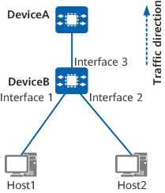

Example for Configuring Congestion Management
Networking Requirements
Host1 and Host2 provide voice, video, and data services, and the 802.1p priorities of the service packets are 6, 5, and 2, respectively. Traffic of these services is transmitted through DeviceB and then DeviceA. To reduce the impact of network congestion and guarantee high-priority services that require low latency, set congestion management parameters according to Table 1.
Service Type |
Color |
CoS |
Scheduling Mode |
Scheduling Weight |
|---|---|---|---|---|
Voice |
Green |
EF |
PQ |
- |
Video |
Yellow |
AF3 |
WDRR |
100 |
Data |
Red |
AF1 |
WDRR |
50 |

In this example, interface 1, interface 2, and interface 3 represent 10GE 0/0/1, 10GE 0/0/2, and 10GE 0/0/3, respectively.

Procedure
- Configure VLANs for each interface so that devices can communicate with each other at the link layer.
# Configure 10GE 0/0/3 on DeviceB as a trunk interface. Add 10GE 0/0/1 to VLAN 100, 10GE 0/0/2 to VLAN 200, and 10GE 0/0/3 to VLAN 100 and VLAN 200.
<HUAWEI> system-view [HUAWEI] sysname DeviceB [DeviceB] vlan batch 100 200 [DeviceB] interface 10ge 0/0/1 [DeviceB-10GE0/0/1] portswitch [DeviceB-10GE0/0/1] port link-type access [DeviceB-10GE0/0/1] port default vlan 100 [DeviceB-10GE0/0/1] quit [DeviceB] interface 10ge 0/0/2 [DeviceB-10GE0/0/2] portswitch [DeviceB-10GE0/0/2] port link-type access [DeviceB-10GE0/0/2] port default vlan 200 [DeviceB-10GE0/0/2] quit [DeviceB] interface 10ge 0/0/3 [DeviceB-10GE0/0/3] portswitch [DeviceB-10GE0/0/3] port link-type trunk [DeviceB-10GE0/0/3] port trunk allow-pass vlan 100 200 [DeviceB-10GE0/0/3] quit
- Configure priority mapping to map 802.1p values in voice, video, and data packets to different CoS values and colors.
# Create DiffServ domain ds1, map 802.1p values 6, 5, and 2 to CoS values EF, AF3, and AF1, respectively, and color the packets green, yellow, and red, respectively.
[DeviceB] diffserv domain ds1 [DeviceB-dsdomain-ds1] 8021p-inbound 6 phb ef green [DeviceB-dsdomain-ds1] 8021p-inbound 5 phb af3 yellow [DeviceB-dsdomain-ds1] 8021p-inbound 2 phb af1 red [DeviceB-dsdomain-ds1] quit
# Configure inbound interfaces 10GE 0/0/1 and 10GE 0/0/2 of DeviceB to perform mapping based on the outer 802.1p value, and bind the interfaces to the DiffServ domain.
[DeviceB] interface 10ge 0/0/1 [DeviceB-10GE0/0/1] trust 8021p outer [DeviceB-10GE0/0/1] trust upstream ds1 [DeviceB-10GE0/0/1] quit [DeviceB] interface 10ge 0/0/2 [DeviceB-10GE0/0/2] trust 8021p outer [DeviceB-10GE0/0/2] trust upstream ds1 [DeviceB-10GE0/0/2] quit
- Configure congestion management. Set scheduling parameters such as the scheduling mode and weight to implement differentiated scheduling for queues with different priorities.
# Configure scheduling parameters for queues with different CoS values on the outbound interface 10GE 0/0/3 of DeviceB.
[DeviceB] interface 10ge 0/0/3 [DeviceB-10GE0/0/3] qos pq 5 to 7 drr 0 to 4 [DeviceB-10GE0/0/3] qos queue 3 drr weight 100 [DeviceB-10GE0/0/3] qos queue 1 drr weight 50 [DeviceB-10GE0/0/3] quit [DeviceB] quit
Verifying the Configuration
# Check the configuration of DiffServ domain ds1.
<DeviceB> display diffserv domain name ds1
Diffserv domain name:ds1
8021p-inbound 0 phb be green
8021p-inbound 1 phb af1 green
8021p-inbound 2 phb af1 red
8021p-inbound 3 phb af3 green
8021p-inbound 4 phb af4 green
8021p-inbound 5 phb af3 yellow
8021p-inbound 6 phb ef green
8021p-inbound 7 phb cs7 green
8021p-outbound be green map 0
8021p-outbound be yellow map 0
8021p-outbound be red map 0
...
In the DiffServ domain, 802.1p values 6, 5, and 2 are mapped to CoS values EF, AF3, and AF1, respectively, and packets are colored green, yellow, and red, respectively.
# Check the configuration of 10GE 0/0/3. You can see the scheduling parameters of queues with different CoS values.
<DeviceB> display qos configuration interface 10ge 0/0/3 interface 10GE0/0/3 -------------------------------------------------------------------------- trust flag : outer 8021p diffserv domain : default dei enable : - port priority : 0 phb marking 8021p : disable phb marking dscp : disable port wred : - port lr : cir = -, cbs = - port car inbound : - port car outbound : - schedule profile : - -------------------------------------------------------------------------- queue shaping schedule wred cir pir cbs pbs -------------------------------------------------------------------------- 0 - - drr - - - weight = 10 1 - - drr - - - weight = 50 2 - - drr - - - weight = 10 3 - - drr - - - weight = 100 4 - - drr - - - weight = 10 5 - - pq - - - 6 - - pq - - - 7 - - pq - - - --------------------------------------------------------------------------
Configuration Scripts
DeviceB
# sysname DeviceB # vlan batch 100 200 # diffserv domain ds1 8021p-inbound 2 phb af1 red 8021p-inbound 5 phb af3 yellow 8021p-inbound 6 phb ef green # interface 10GE0/0/1 portswitch port link-type access port default vlan 100 trust 8021p outer trust upstream ds1 # interface 10GE0/0/2 portswitch port link-type access port default vlan 200 trust 8021p outer trust upstream ds1 # interface 10GE0/0/3 portswitch port link-type trunk port trunk allow-pass vlan 100 200 qos pq 5 to 7 qos queue 1 drr weight 50 qos queue 3 drr weight 100 # return